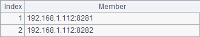
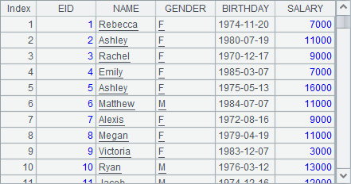
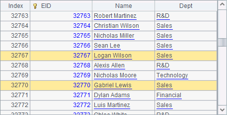

The invoke function can be used to invoke the static method(s) in a specified user-defined Java class. Take the following Java class test.Calc01 as an example:
package test;
public class Calc01 {
public static Double distance1(Number loc) {
double len = Math.abs(loc.doubleValue());
len = Math.round(len*1000)/1000d;
return Double.valueOf(len);
}
}
In this simple class, the static method distance1 computes the distance between a given coordinate and the origin, with the value being rounded to three decimal places. The methods invoked in esProc must be both static and public. Before invocation, the user-defined function class needs to be placed in esProc¡¯s classpath, i.e. [installation directory]\esProc\classes. Considering the class¡¯s own path, here the class file should be put in [installation directory]\esProc\classes\test. If invoked in the web environment, it needs to be placed in WEB-INF/classes path. After that, the user-defined functions can be invoked using invoke function in the cellset:
|
|
A |
|
1 |
-12.34567 |
|
2 |
=invoke(test.Calc01.distance1,A1) |
|
3 |
=invoke(test.Calc01.distance1, -512) |
As shown in this example, when using invoke function, first specify the full path of the class being invoked and the static method name and then list the parameters in order. The parameters can be cell values in a cellset and cellset parameters, or can be directly entered. As the type of parameter specifying distance1 method is Number, its value can be either a floating-point number or an integer. After computation, results of A2 and A3 are as follows:
 
There can be multiple user-defined functions in a single class. Now add another method:
public static Double distance2(Number loc1, Number loc2) {
double len = Math.abs(loc1.doubleValue()-loc2.doubleValue());
len = Math.round(len*1000)/1000d;
return Double.valueOf(len);
}
The newly-added distance2 computes the distance between two coordinates in a numerical axis. As esProc invokes methods by their names, different user-defined functions need to have different method names. Once the class(es) has been place in the application¡¯s classpath, the user-defined functions can be invoked in the same cellset, no matter they are from a single class or multiple classes:
|
|
A |
|
1 |
=invoke(test.Calc01.distance1,-12.3456) |
|
2 |
=invoke(test.Calc01.distance2,12,-12) |
In the invoke function, the number and type of parameters need to match the methods being invoked. Here¡¯re results of A1 and A2:
